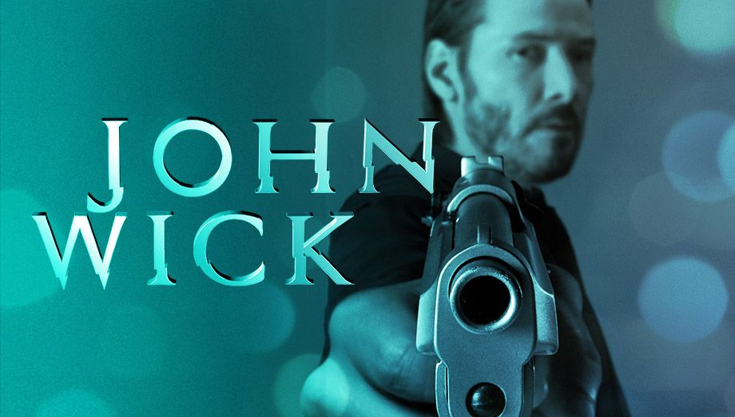

Zadanie 1 – Powitanie z animacją
Zadanie 2 – Lista filmów do obejrzenia
- Inception
- The Matrix
- Interstellar
- Blade Runner 2049
- Dune
Zadanie 3 – Recenzje z dynamicznym stylowaniem
Inception to film o kradzieży pomysłów z umysłów ludzi podczas snu. Reżyserem jest Christopher Nolan, a w rolach głównych występują Leonardo DiCaprio i Marion Cotillard.
The Matrix to kultowy film science fiction o rzeczywistości wirtualnej. Neo odkrywa prawdę o świecie, w którym żyje.
Interstellar opowiada o podróży w kosmos w poszukiwaniu nowego domu dla ludzkości. Film Nolana z Matthew McConaughey w roli głównej.
Zadanie 4 – Przełączanie stylów recenzji
Maraton filmowy odbędzie się w sobotę o 18:00 w moim domu. Przygotujcie się na seans filmów science fiction. Pamiętajcie o przekąskach!
Zadanie 5 – Notatki do filmu
Tu pojawi się Twoja notatka
Zadanie 6 – Galeria plakatów filmowych

